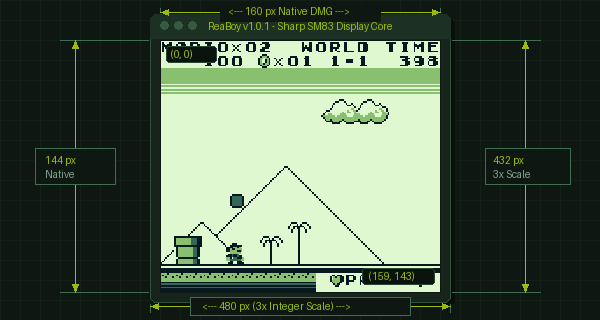
Locked Integer Scaling
Fixed 1×, 2×, 3×, and 4× window sizes locked to 160×144, auto-capped to your monitor, plus instant F11 fullscreen and authentic Olive Green or Grayscale palettes.
ReaBoy runs both original Game Boy (DMG-01) and Game Boy Color (CGB) games with machine-cycle-accurate SM83 execution, a dot-accurate Pixel FIFO PPU, 2× double-speed CPU, and bundled Bootix firmware. 1,592 original Game Boy games 100% playable, plus full CGB colour library support with zero installation or admin rights required.
No runtime installers, missing DLLs, or firmware dumps. Everything you need is self-contained in one portable package: ReaBoy.exe, embedded .NET 8 runtime, user manual, and the ready-to-run rom/ folder with open-source Bootix DMG v1.2 firmware.
Download, unzip anywhere on your PC, and launch ReaBoy.exe immediately. Zero installation wizard and zero administrator rights required.
Paste into Windows PowerShell to download the package, verify SHA-256 checksums, extract the rom/ folder, and add a Start Menu shortcut.
irm https://raw.githubusercontent.com/ScientificBrad/ReaBoy/main/install.ps1 | iex
Every commercial original Game Boy release—1,592 of 1,592 titles (100%)—tested and verified across ROM-Only, MBC1, MBC2, and MBC3 mappers, alongside full Game Boy Color dual-mode ($80) and CGB-exclusive ($C0) games. Machine-cycle-accurate SM83 timing, dot-accurate Pixel FIFO rendering, and 63 passing hardware test ROMs. Search the complete database, inspect telemetry, and test your own ROM collection.

DMG-01 PHILOSOPHY
No bloated frontends, no hunting for obscure BIOS files, no stretched blurry pixels. Every decision in ReaBoy respects the original DMG-01 hardware.

Fixed 1×, 2×, 3×, and 4× window sizes locked to 160×144, auto-capped to your monitor, plus instant F11 fullscreen and authentic Olive Green or Grayscale palettes.
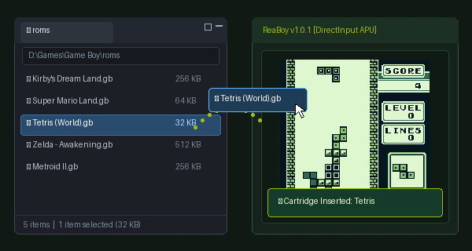
Drop any .gb ROM onto the window to switch cartridges instantly. Remove Cartridge saves battery RAM and returns cleanly to the empty-console boot logo.

MBC1 battery RAM saves automatically on game switch, reset, cartridge removal, and exit — keyed by ROM content hash in %APPDATA%\BJStudios\ReaBoy\saves.
DEFAULT KEYBOARD CONTROLS
COMPLETE USER MANUAL & CLI
Engineered for both casual play and bit-exact research. The technical guide covers every hardware register, headless benchmarking, and cartridge mapper detail:
--headless --frames 600 CI runner
.sav keyed by ROM content
Real gameplay recordings captured directly from ReaBoy's cycle-accurate SM83 CPU and scanline PPU core. Watch 24 landmark Game Boy titles in action below, or visit the Compatibility Lab to browse the full library of 1,592 tested Game Boy games.
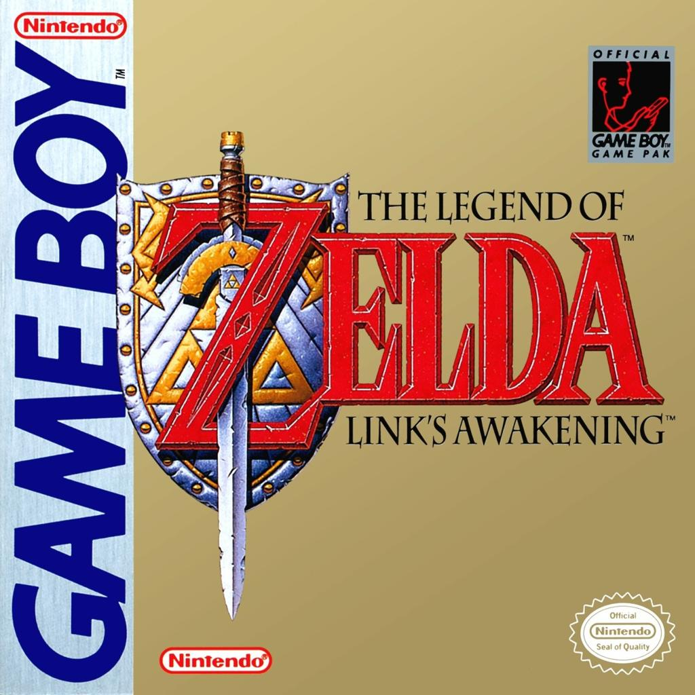
Arguably the greatest adventure ever made for the original Game Boy. Huge world, dungeons, puzzles and an unforgettable story (1,024 KB · MBC1+RAM+BATT).

The definitive handheld puzzle game. Helped turn the Game Boy into a worldwide phenomenon (32 KB · ROM-Only).
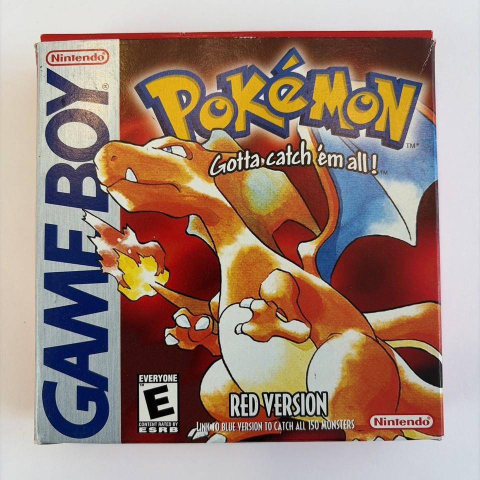
The beginning of the Pokémon phenomenon. Collecting, trading and battling 151 Pokémon (1,024 KB · MBC3+RAM+BATT).

Beautifully designed platformer with larger sprites, creative levels and Wario's debut (512 KB · MBC1+RAM+BATT).

Starts like the arcade original before revealing an enormous puzzle-platform adventure (512 KB · MBC1+RAM+BATT).

Brilliant exploration-based platformer with treasure hunting and Wario's distinctive gameplay (512 KB · MBC1+RAM+BATT).

Dark, atmospheric exploration that pushed the handheld well beyond simple arcade games (256 KB · MBC1+RAM+BATT).

A polished platformer with copy abilities, animal companions and inventive levels (1,024 KB · MBC1+RAM+BATT).

One of Nintendo's most addictive puzzle games. Simple mechanics, demanding difficulty (32 KB · ROM-Only).

A launch-era classic that proved Mario could work on a tiny monochrome screen (64 KB · MBC1).
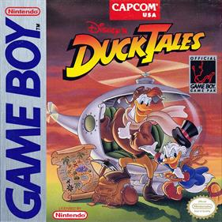
Capcom and Disney's legendary 8-bit platformer. Guide Scrooge McDuck across the Amazon, Transylvania, and the African Mines with his iconic pogo cane (64 KB · MBC1).
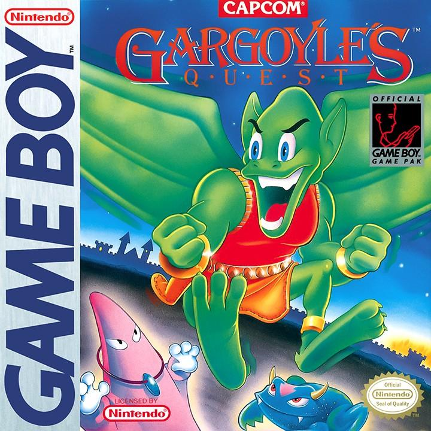
A superb mixture of platforming, exploration and role-playing elements (256 KB · MBC1).
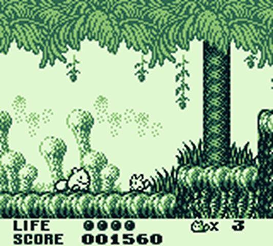
A gorgeous, surreal platformer from Sunsoft. Incredible sprite animation and imaginative visuals. One of the best showcases for Game Boy graphics (128 KB · MBC1).
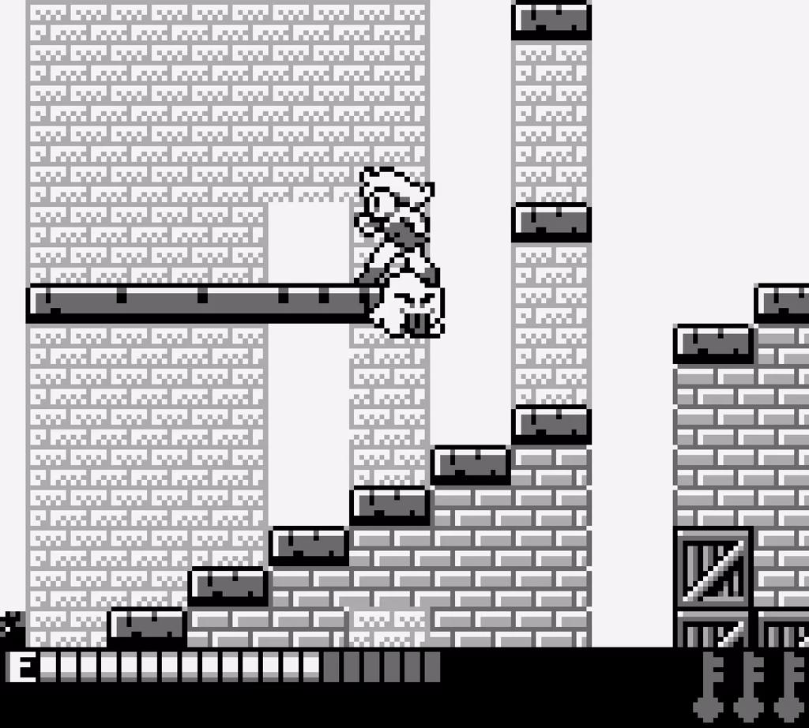
You play a ghost that possesses enemy bodies, stealing their weapons and abilities. Brilliantly unusual mechanic (256 KB · MBC1).

Konami's cartoonish Castlevania spin-off. Excellent animation, varied bosses and spectacular monochrome artwork (256 KB · MBC1).
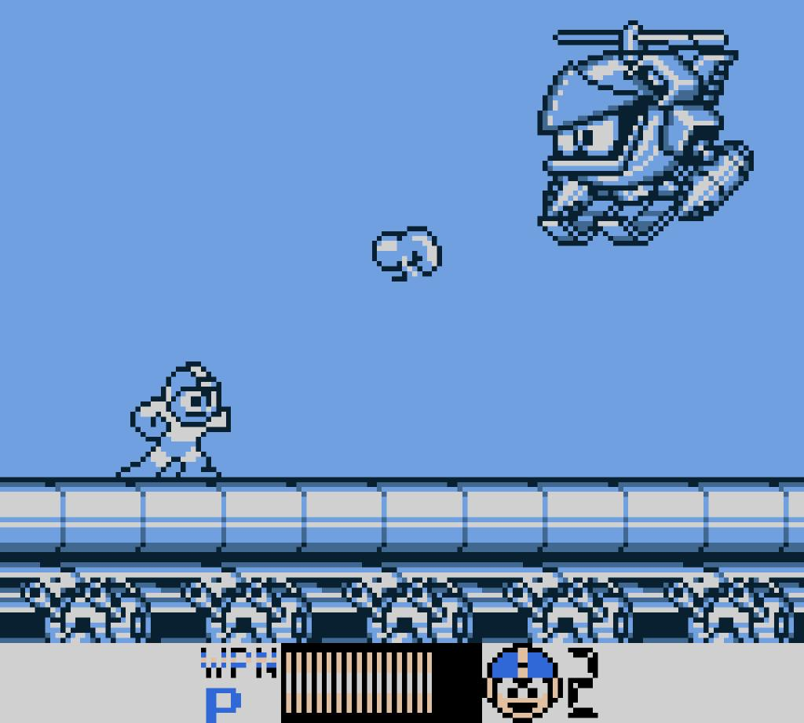
Original bosses based on planets, intricate levels and exceptional technical polish. Not to be confused with NES Mega Man 5 (512 KB · MBC1).

The original 1989 portable Gothic vampire hunt. Christopher Belmont braves Count Dracula's haunted castle armed with the legendary whip (64 KB · MBC1).
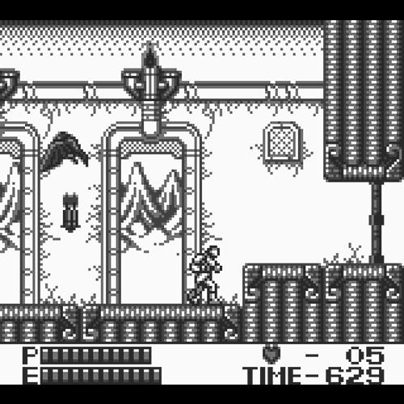
Atmospheric castles, strong level design and some of the best music on the handheld (128 KB · MBC1).
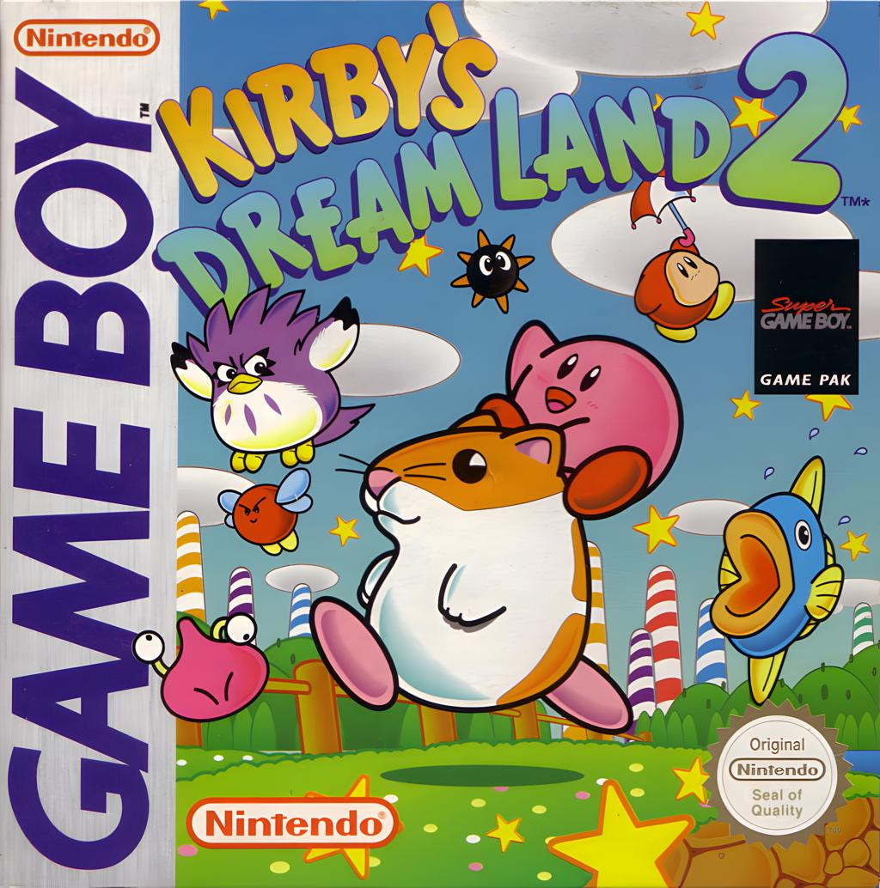
Hal Laboratory's breezy classic introducing the iconic pink hero. Features tight floating mechanics and lively 8-bit sprites (256 KB · MBC1).

Rare's groundbreaking technical marvel translating pre-rendered ACM graphics to the 4-shade DMG screen (512 KB · MBC1+RAM+BATT).

Diddy and Dixie Kong take on Kaptain K. Rool across treacherous pirate islands with custom chiptune David Wise tracks (512 KB · MBC1+RAM+BATT).

Addictive rapid-fire tile puzzle game by Game Freak. Match falling Goombas, Boos, and Piranha Plants inside Yoshi egg shells (64 KB · MBC1).

Jupiter and Nintendo's brilliant nonogram logic puzzler. Mario chisels stone tiles across Kinoko, Star, and Time Trial riddle boards (512 KB · MBC1+RAM+BATT).

Fast-paced culinary puzzle classic designed by Alexey Pajitnov. Shift rows and columns to clear matching cookies (128 KB · MBC1).